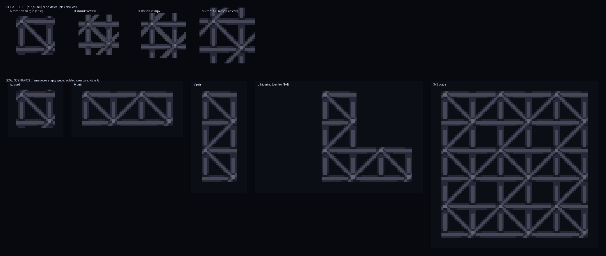

Each lattice tile will render ONLY its Eris frame over empty space (no full-mesh underlay). Top row: four candidate looks for the ISOLATED tile (no neighbours) — A/B/C are new "capped" sprites; "current full mesh" is what you see today and is the Eris interior/interlocked look. Bottom row: the goal scenarios composited from the real sprites (isolated uses candidate A here; pairs / L-corner / plaza are independent of the A/B/C choice).
